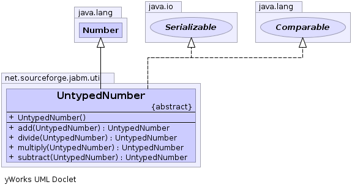

net.sourceforge.jabm.util
Class UntypedNumber
java.lang.Object
 java.lang.Number
net.sourceforge.jabm.util.UntypedNumber
java.lang.Number
net.sourceforge.jabm.util.UntypedNumber
- All Implemented Interfaces:
- java.io.Serializable, java.lang.Comparable
- Direct Known Subclasses:
- UntypedDouble, UntypedLong
public abstract class UntypedNumber
- extends java.lang.Number
- implements java.lang.Comparable, java.io.Serializable
This is an extension of Java's Number class that provides methods for
performing untyped polymorphic arithmetic. For example, an UntypedDouble can
be added to an UntypedInteger without having to know the class of each
operand.
- See Also:
- Serialized Form
-
-

| Methods inherited from class java.lang.Number |
byteValue, doubleValue, floatValue, intValue, longValue, shortValue |
| Methods inherited from class java.lang.Object |
clone, equals, finalize, getClass, hashCode, notify, notifyAll, toString, wait, wait, wait |
| Methods inherited from interface java.lang.Comparable |
compareTo |
UntypedNumber
public UntypedNumber()
multiply
public abstract UntypedNumber multiply(UntypedNumber other)
add
public abstract UntypedNumber add(UntypedNumber other)
subtract
public abstract UntypedNumber subtract(UntypedNumber other)
divide
public abstract UntypedNumber divide(UntypedNumber other)